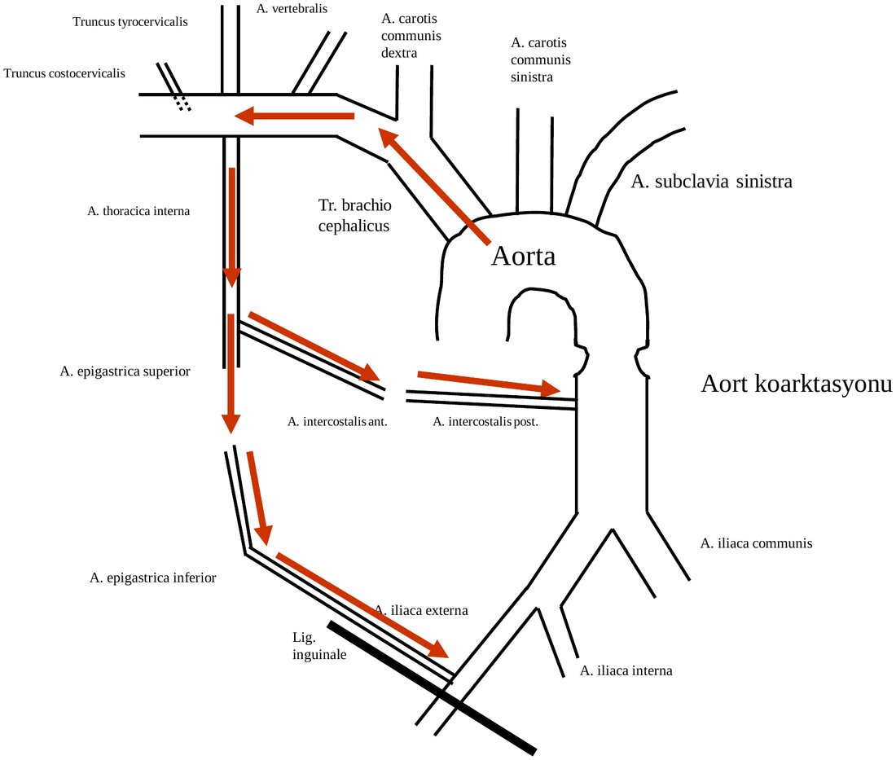

Bölüm 1 · Arteria subclavia
A. subclavia üst ekstremitenin, beynin arka kısmının, boyun kökünün ve göğüs ön duvarının arteridir. Sınav soruları üç noktada toplanır: dalların hangi bölümden çıktığı, a. thoracica interna'nın uç dalları (özellikle a. musculophrenica) ve interkostal aralıkların hangi arterden beslendiği. Arcus aortae'nin dalları ve a. subclavia'nın kısa özeti Kitap 1, Bölüm 7.2'dedir. Bu bölüm konuyu dördüncü sunumun ayrıntısıyla tamamlar.
Üst ekstremitenin kanı arcus aortae'den başlayarak sırasıyla a. subclavia, a. axillaris, a. brachialis ve ön kolda a. radialis ile a. ulnaris yoluyla gelir. A. subclavia sağda sağ art. sternoclavicularis'in arkasında truncus brachiocephalicus'tan, solda arcus aortae'nin üçüncü dalı olarak T4 yüksekliğinde çıkar. Sol arter önce mediastinum superius'ta boyun köküne yükselir. Bu göğüs içi bölüm sağda yoktur, bu yüzden sol a. subclavia daha uzundur. İki taraf da cupula pleurae'nin üzerinden dışa doğru kavis çizer, klavikulanın yaklaşık 2 cm üstüne çıkar ve 1. kaburganın dış kenarında a. axillaris adını alır.
Arter m. scalenus anterior'a göre üç bölüme ayrılır (Şekil 1.1). Birinci bölüm başlangıçtan kasın medial kenarına kadardır ve sağda ile solda farklı uzunluktadır. İkinci bölüm kasın arkasındadır. Burada arter plexus brachialis ile birlikte m. scalenus anterior ile m. scalenus medius arasındaki aralıktan geçer. İkinci bölüm en yüksekte duran ve en kısa olan bölümdür. Üçüncü bölüm kasın lateral kenarından 1. kaburganın dış kenarına kadardır. Kol arkaya ve aşağı çekildiğinde arter klavikula ile 1. kaburga arasında sıkışır ve radial nabız zayıflar. Bu, kostoklaviküler sıkışmanın muayene temelidir.
A. vertebralis genellikle m. scalenus anterior'un medial kenarına yakın bir yerden çıkan ilk daldır. Yukarı çıkar, 6. servikal vertebranın foramen transversarium'una girer ve üstteki vertebraların foramen transversarium'larından geçerek yükselir. Atlasın sulcus a. vertebralis'inde içe kıvrılır ve foramen magnum'dan kafa boşluğuna girer. Seyrine göre dört bölümü vardır: pars prevertebralis, pars transversaria, pars atlantica ve pars intracranialis. Dalları medulla spinalis'e (rr. spinales, a. spinalis anterior ve posterior), beyin zarlarına (rr. meningei) ve beyinciğin alt yüzüne (a. inferior posterior cerebelli) gider. 2025-2026 uygulama sınavında gösterilen yapılardandır.
A. thoracica interna truncus thyrocervicalis'in tam karşısında, birinci bölümün alt yüzünden çıkar. Cupula pleurae'ye dayanarak aşağı-içe doğru kavis yapar, klavikula ve 1. kaburga kıkırdağının arkasından geçer ve sternumun dış kenarından yaklaşık 1 cm uzakta kaburga kıkırdaklarının arkasında iner. 6. interkostal aralık hizasında iki uç dalına ayrılır. Dalları sırasıyla şunlardır:
Bir interkostal aralığın hangi arterden beslendiği sorusu üç kaynaktan cevaplanır. Ön interkostal arterler: 1.-6. aralıklar doğrudan a. thoracica interna'dan, 7.-9. aralıklar a. musculophrenica'dan gelir. 10. ve 11. aralıkların ön kısmı arka interkostal arterlerin devamıyla beslenir. Arka interkostal arterler: 1. ve 2. aralıklar truncus costocervicalis'in a. intercostalis suprema'sından, 3.-11. aralıklar aorta thoracica'dan gelir. 12. kaburganın altındaki a. subcostalis de aortanın dalıdır (Bölüm 3.1). Her aralıkta ön ve arka interkostal arterler birbiriyle anastomoz yapar.
Truncus thyrocervicalis m. scalenus anterior'un medial kenarında birinci bölümden çıkan kısa bir gövdedir. (Sunum bu yeri "m. scalenus medius'un medial kenarı" olarak yazmıştır. Birinci bölüm m. scalenus anterior'un medialinde kaldığı için doğrusu m. scalenus anterior'dur.) Üç dalı vardır:
Truncus costocervicalis ikinci bölümün tek dalıdır. İki dala ayrılır: ensenin derin kaslarına giden a. cervicalis profunda ve 1. ile 2. kaburga boyunlarının önünde, plevrayla örtülü olarak aşağı inen a. intercostalis suprema. A. intercostalis suprema 1. ve 2. interkostal aralığın arka interkostal arterlerini verir.
Skapula çevresi anastomozu. A. subclavia üçüncü bölümünde bağlanırsa kol beslenmesini tamamen yitirmez. A. suprascapularis ve a. transversa colli (a. subclavia'dan), a. subscapularis ve a. thoracica lateralis (a. axillaris'ten) ile a. thoracica interna'nın dalları skapula ve göğüs duvarında birbirine bağlanır. Kan bu yolla bağlanma yerinin distaline ulaşır ve beslenemeyen yerler kısmen beslenir.
Aort koarktasyonu. Aorta, a. subclavia sinistra'nın çıkışının hemen distalinde (isthmus aortae) daralmışsa alt vücuda kan iki kollateral yolla ulaşır (Şekil 1.2). Birinci yolda a. thoracica interna → aa. intercostales anteriores → aa. intercostales posteriores → aorta descendens sırası izlenir. Genişleyen arka interkostal arterler kaburgaların alt kenarını aşındırır ve göğüs grafisinde "kaburga çentiklenmesi" görülür. İkinci yolda a. thoracica interna → a. epigastrica superior → a. epigastrica inferior → a. iliaca externa sırasıyla kan bacaklara ulaşır. Klinik bulgu kollarda yüksek, bacaklarda düşük kan basıncıdır.

Doğru: A. A. thoracica interna 6. interkostal aralıkta iki uç dalına ayrılır. Bunlardan a. musculophrenica kaburga kavsi boyunca dışa ve aşağı giderek 7., 8. ve 9. aralıklara ön interkostal dallar verir ve diyaframın ön kısmını besler.
B yanlış: a. epigastrica superior öbür uç daldır, rektus kılıfına girer, interkostal aralığa dal vermez. C yanlış: truncus costocervicalis a. intercostalis suprema ile 1. ve 2. aralığı besler. D yanlış: a. thoracica interna'nın kendi ön interkostal dalları yalnızca üst altı aralığa gider. 7.-9. aralıklar onun dalı a. musculophrenica'nın alanıdır. E yanlış: a. vertebralis boyunda yükselir ve beyne gider.
Doğru: B. A. vertebralis a. subclavia'nın birinci bölümünden çıkar ve 6. servikal vertebranın foramen transversarium'una girer. Buradan yukarı doğru her vertebranın foramen transversarium'undan geçer, atlasın üzerinde içe kıvrılır ve foramen magnum'dan kafa içine girer.
A yanlış: C7'nin foramen transversarium'undan genellikle arter değil yalnızca küçük venler geçer. C yanlış: C5'e arter ancak C6'dan geçtikten sonra ulaşır. D ve E yanlış: C2 ve C1 seyrin sonudur. Arter atlasın sulcus a. vertebralis'inde kıvrılarak kafa boşluğuna yönelir.
Doğru: D. Truncus thyrocervicalis'ten çıkan a. thyroidea inferior tiroidin arka yüzüne ulaşırken trakea ile özofagus arasındaki oluktan yükselen n. laryngeus recurrens'i çaprazlar. Sinir genellikle arterin arkasından, bazen önünden geçer. Bağlama sırasında sinirin hasarı ses kısıklığına yol açar.
A yanlış: a. thyroidea superior a. carotis externa'dan çıkar ve n. laryngeus superior'un dış dalıyla komşudur, rekürren sinirle değil. B yanlış: a. thyroidea ima varyasyonel bir arterdir ve trakeanın önündedir. C ve E yanlış: bu iki dal boyun kökünden dışa, skapulaya doğru gider. Larinksin sinirleriyle ilişkileri yoktur.
Doğru: C. A. subclavia'nın ikinci bölümünden çıkan truncus costocervicalis'in a. intercostalis suprema dalı 1. ve 2. kaburga boyunlarının önünde iner ve bu iki aralığın arka interkostal arterlerini verir.
A yanlış: aorta thoracica T4'ten başlar ve ancak 3.-11. aralıklara arka interkostal arter verir. B yanlış: a. thoracica interna ön interkostal arterleri verir, arka arterleri değil. D yanlış: truncus thyrocervicalis tiroid, boyun ve skapula bölgesine gider. E yanlış: a. axillaris'in a. thoracica superior'u ilk iki aralığın kaslarına dal verebilir, ama arka interkostal arterlerin kaynağı değildir.
Doğru: E. A. vertebralis beyne gider. Göğüs ve karın duvarındaki kollateral ağlara katılmaz.
A, B, C ve D yanlış: hepsi kollateral yoldadır. Kan a. subclavia'dan a. thoracica interna'ya geçer. Bir kısmı aa. intercostales anteriores üzerinden arka interkostal arterlere ve aorta descendens'e ulaşır. Bir kısmı da a. epigastrica superior ile a. epigastrica inferior arasındaki anastomozdan a. iliaca externa'ya akar.
Doğru: A. Truncus thyrocervicalis'in dalı a. suprascapularis bağın üstünden, n. suprascapularis ise bağın altından (incisura scapulae'den) geçer. Arter sonra collum scapulae'yi dolanarak fossa infraspinata'ya iner.
B yanlış: a. dorsalis scapulae skapulanın iç kenarı boyunca mm. rhomboidei'nin derininde iner. C yanlış: a. circumflexa scapulae a. subscapularis'in dalıdır, skapulanın dış kenarını dolanır. D yanlış: a. thoracodorsalis m. latissimus dorsi'ye gider. E yanlış: a. cervicalis ascendens boyunda yukarı çıkar.